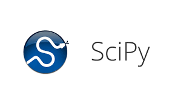
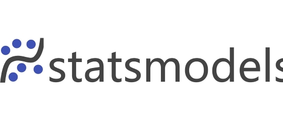
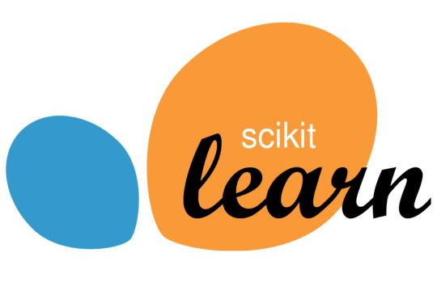
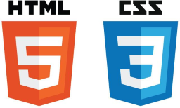
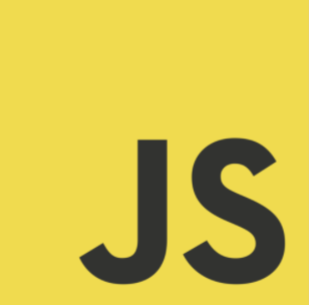

Portfolio of Sinethemba Tompelo
Yep. That's me. Smiling for the camera.
Bio
- He is 23 years old.
- He matriculated in 2020 at Athlone Boys' High School, in Johannesburg.
- He enjoys spending time on problem-solving hobbies, mainly playing chess.
- He currently lives in Hillbrow.
- He discovered the passion for coding in September 2022, the same time he underwent basic computer training.
- He is very introverted, but not afraid to talk.
- He completed his 2024-2025 Data Science learnership with UmuzixOgilvy JHB.
Skills
- Python (Data Science): NumPy, Pandas, Matplotlib, Scipy, Statsmodels & Scikit-learn



- Git & GitHub
- HTML5, CSS3, & JS (Web Development)


- SQL: PostgreSQL, Neon, & MongoDB
Social Platforms
C.V.
To view my C.V., click here.
Projects
- Notebooks:
- Website(s):
-
App(s):
-
- Basic Chess App (Broken -- Work in Progress)